Data Analysis
library(tidyverse)## ── Attaching packages ─────────────────────────────────────── tidyverse 1.3.1 ──## ✓ ggplot2 3.3.5 ✓ purrr 0.3.4
## ✓ tibble 3.1.5 ✓ dplyr 1.0.7
## ✓ tidyr 1.1.3 ✓ stringr 1.4.0
## ✓ readr 2.0.1 ✓ forcats 0.5.1## ── Conflicts ────────────────────────────────────────── tidyverse_conflicts() ──
## x dplyr::filter() masks stats::filter()
## x dplyr::lag() masks stats::lag()library(survey)## Loading required package: grid## Loading required package: Matrix##
## Attaching package: 'Matrix'## The following objects are masked from 'package:tidyr':
##
## expand, pack, unpack## Loading required package: survival##
## Attaching package: 'survey'## The following object is masked from 'package:graphics':
##
## dotchartlibrary(viridis)## Loading required package: viridisLitelibrary(table1)##
## Attaching package: 'table1'## The following objects are masked from 'package:base':
##
## units, units<-library(kableExtra)##
## Attaching package: 'kableExtra'## The following object is masked from 'package:dplyr':
##
## group_rowsknitr::opts_chunk$set(
warning = FALSE,
message = FALSE,
echo = FALSE
)
theme_set(theme_minimal() + theme(legend.position = "bottom"))
options(
ggplot2.continuous.colour = "viridis",
ggplot2.continuous.fill = "viridis"
)
scale_colour_discrete = scale_colour_viridis_d(option = "viridis")
scale_fill_discrete = scale_fill_viridis_d(option = "viridis")This data analysis uses the resulted data set cleaned by the processing described in data analysis part of Data. According to our motivation, we are interested the relationship between drug use and youth behaviors. In this analysis, we will explore the association between drug use status and each health behavior variables.
There are three kinds of health-related variables and we will use different methods to analyze: - Bi-level categorical variables: drunk driving, carrying weapon, suicide attempt, physical fight, quit-smoking, early-age sexual intercourse, heavy screening usage, enough sleeping - Multivariate categorical variables: smoking status, binge drinking status, seat belt usage, GPA(grades in school) - Quantitative Variables: initial smoking age, initial drinking age, BMI
Here is a table summarized the overall distribution of important variables by drug use status.
Three-line-table
| Heavy Dose (N=1778) |
Light Dose (N=4257) |
No Drug Use (N=13819) |
Overall (N=19854) |
|
|---|---|---|---|---|
| Drunk Driving | ||||
| No | 1126 (63.3%) | 3382 (79.4%) | 12486 (90.4%) | 16994 (85.6%) |
| Yes | 652 (36.7%) | 875 (20.6%) | 1333 (9.6%) | 2860 (14.4%) |
| Text Driving | ||||
| No | 496 (27.9%) | 1365 (32.1%) | 5628 (40.7%) | 7489 (37.7%) |
| Yes | 1282 (72.1%) | 2892 (67.9%) | 8191 (59.3%) | 12365 (62.3%) |
| Weapon Carrying | ||||
| No | 1512 (85.0%) | 4078 (95.8%) | 13496 (97.7%) | 19086 (96.1%) |
| Yes | 266 (15.0%) | 179 (4.2%) | 323 (2.3%) | 768 (3.9%) |
| Suicide Attempt | ||||
| No | 1110 (62.4%) | 3052 (71.7%) | 12174 (88.1%) | 16336 (82.3%) |
| Yes | 668 (37.6%) | 1205 (28.3%) | 1645 (11.9%) | 3518 (17.7%) |
| Quit Smoking | ||||
| Never Smoke | 359 (20.2%) | 2245 (52.7%) | 12344 (89.3%) | 14948 (75.3%) |
| No | 763 (42.9%) | 943 (22.2%) | 724 (5.2%) | 2430 (12.2%) |
| Yes | 656 (36.9%) | 1069 (25.1%) | 751 (5.4%) | 2476 (12.5%) |
| Physical Fight | ||||
| No | 958 (53.9%) | 3177 (74.6%) | 12199 (88.3%) | 16334 (82.3%) |
| Yes | 820 (46.1%) | 1080 (25.4%) | 1620 (11.7%) | 3520 (17.7%) |
| Sexual Intercourse | ||||
| No | 1037 (58.3%) | 3418 (80.3%) | 13012 (94.2%) | 17467 (88.0%) |
| Yes | 741 (41.7%) | 839 (19.7%) | 807 (5.8%) | 2387 (12.0%) |
| Screening Use | ||||
| Mean (SD) | 3.80 (2.64) | 3.86 (2.48) | 3.65 (2.36) | 3.71 (2.41) |
| Median [Min, Max] | 3.50 [0, 10.0] | 4.00 [0, 10.0] | 3.50 [0, 10.0] | 3.50 [0, 10.0] |
| Sleeping Time | ||||
| Mean (SD) | 6.16 (1.38) | 6.36 (1.33) | 6.71 (1.30) | 6.59 (1.33) |
| Median [Min, Max] | 6.00 [4.00, 10.0] | 6.00 [4.00, 10.0] | 7.00 [4.00, 10.0] | 7.00 [4.00, 10.0] |
| Smoking Status | ||||
| Heavy Smoker | 58 (3.3%) | 15 (0.4%) | 11 (0.1%) | 84 (0.4%) |
| Light Smoker | 642 (36.1%) | 499 (11.7%) | 212 (1.5%) | 1353 (6.8%) |
| Never Smoker | 1078 (60.6%) | 3743 (87.9%) | 13596 (98.4%) | 18417 (92.8%) |
| Binge Drinking | ||||
| Heavy Binge Drinking | 261 (14.7%) | 157 (3.7%) | 41 (0.3%) | 459 (2.3%) |
| Light Binge Drinking | 596 (33.5%) | 792 (18.6%) | 419 (3.0%) | 1807 (9.1%) |
| No Binge Drinking | 921 (51.8%) | 3308 (77.7%) | 13359 (96.7%) | 17588 (88.6%) |
| Seat Belt Use | ||||
| Most of the time or Always | 1190 (66.9%) | 3435 (80.7%) | 12291 (88.9%) | 16916 (85.2%) |
| Never or Rarely | 284 (16.0%) | 307 (7.2%) | 526 (3.8%) | 1117 (5.6%) |
| Sometimes | 304 (17.1%) | 515 (12.1%) | 1002 (7.3%) | 1821 (9.2%) |
| Grades in School | ||||
| Mostly A's | 431 (24.2%) | 1565 (36.8%) | 7325 (53.0%) | 9321 (46.9%) |
| Mostly B's | 663 (37.3%) | 1627 (38.2%) | 4403 (31.9%) | 6693 (33.7%) |
| Mostly Below C's | 177 (10.0%) | 172 (4.0%) | 304 (2.2%) | 653 (3.3%) |
| Mostly C's | 418 (23.5%) | 744 (17.5%) | 1404 (10.2%) | 2566 (12.9%) |
| None of these grades | 17 (1.0%) | 10 (0.2%) | 28 (0.2%) | 55 (0.3%) |
| Not sure | 72 (4.0%) | 139 (3.3%) | 355 (2.6%) | 566 (2.9%) |
Hypothesis Testing with visualization of drug status comparison
Chi-square Test
For bi-level and multi-level categorical variables, we test the independence of two categorical variables, so we should use the R X C chi-square test with hypotheses that
\[
H_0:\text{There is no association between drug use and the health-related variable of interest}
H_1:\text{There is an association between drug use and the health-related variable of interest}
\] Other than the chi-square test, we also use the Cramer’s V Effect Size to measure the magnitude of the association. It is measure by the manner: \[
V = \sqrt{\frac{X^2}{n*df}}
\] where \(X^2\) is the chi-square statistic, n is the sample size and \(df\) is the degrees of freedom.
Usually, we use the table below to assess the association through the Cramer’s V effect size
| df | small_effect | medium_effect | large_effect |
|---|---|---|---|
| 1 | 0.10 | 0.30 | 0.50 |
| 2 | 0.07 | 0.21 | 0.35 |
| 3 | 0.06 | 0.17 | 0.29 |
| 4 | 0.05 | 0.15 | 0.25 |
| 5 | 0.04 | 0.13 | 0.22 |
Besides the crude analysis which test the association for all observations in the data set, we also perform a stratified analysis over grade, gender and race to investigate the interaction or confounding effect of these demographic variable on the crude association.
1. Drunk Driving
| stratum | statistic | p.value | df | cramer_v_effect_size |
|---|---|---|---|---|
| crude | ||||
| Overall | 1099.24319 | 0 | 2 | 0.3327652 |
| grade | ||||
| 10th Grade | 292.83687 | 0 | 2 | 0.3270364 |
| 11th Grade | 255.36494 | 0 | 2 | 0.3195389 |
| 12th Grade | 315.05617 | 0 | 2 | 0.4153781 |
| 9th Grade | 207.30809 | 0 | 2 | 0.2691369 |
| sex | ||||
| female | 468.87966 | 0 | 2 | 0.2991335 |
| male | 656.12915 | 0 | 2 | 0.3741512 |
| race | ||||
| All other Races | 114.75455 | 0 | 2 | 0.3174118 |
| Black or African American | 53.02572 | 0 | 2 | 0.2281722 |
| Hispanic/Latino | 133.39145 | 0 | 2 | 0.2694694 |
| White | 837.21536 | 0 | 2 | 0.3756641 |
From Table 2, we can see that the overall p-value is significantly small and the p-value of each stratum is significantly small to say that there is association between drug use status and drunk driving. There are differences of effect size among grade, gender and race, implying some interaction effect, but the lowest effect size is still above 0.22, suggesting a moderate association between drug use status and the drunk driving. The effect size demonstrates that the association might be stronger among higher grade, male and white race.
Overall:
Stratified Analysis:
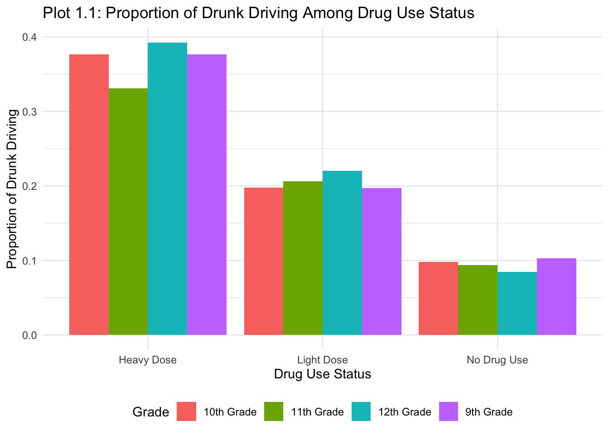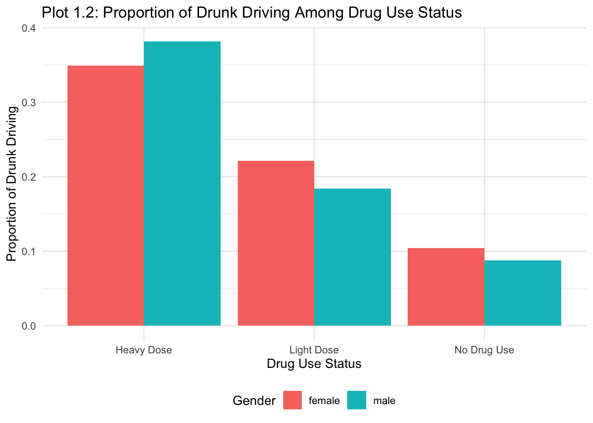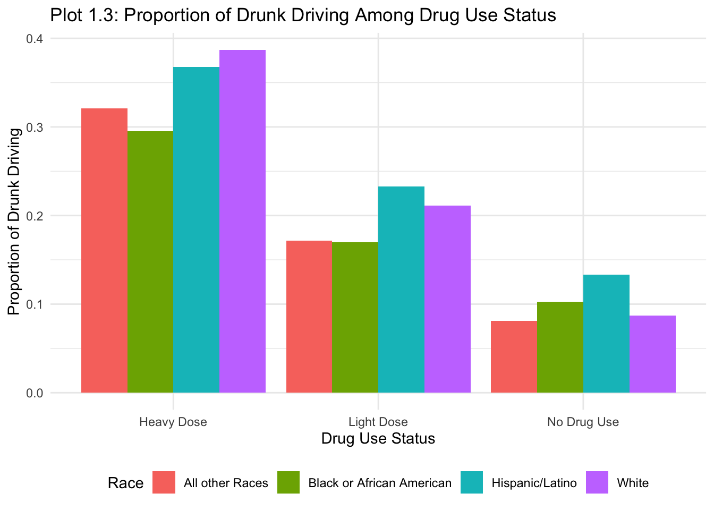
All proportion plots display that an increasing level of drug use frequency has a higher proportion of drunk driving. The dose-response relationship also verifies the existence of the association.
2. Cell Phone Use While Driving
| stratum | statistic | p.value | df | cramer_v_effect_size |
|---|---|---|---|---|
| crude | ||||
| Overall | 184.161787 | 0.0000000 | 2 | 0.1362043 |
| grade | ||||
| 10th Grade | 37.199427 | 0.0000000 | 2 | 0.1165605 |
| 11th Grade | 96.546099 | 0.0000000 | 2 | 0.1964765 |
| 12th Grade | 116.836271 | 0.0000000 | 2 | 0.2529522 |
| 9th Grade | 2.514184 | 0.2844800 | 2 | 0.0296390 |
| sex | ||||
| female | 80.399822 | 0.0000000 | 2 | 0.1238688 |
| male | 104.714674 | 0.0000000 | 2 | 0.1494708 |
| race | ||||
| All other Races | 4.285642 | 0.1173234 | 2 | 0.0613403 |
| Black or African American | 6.351851 | 0.0417555 | 2 | 0.0789714 |
| Hispanic/Latino | 25.164216 | 0.0000034 | 2 | 0.1170408 |
| White | 170.964904 | 0.0000000 | 2 | 0.1697597 |
From Table 3, we can see that not all p-values are significant enough to conclude an association between drug_use status and cell phone use while driving. Since younger children have much less chance of driving than older children, it is make sense that the association is heavily impacted by the grade. However, it also shows no association between drug_use status and cell phone use while driving among Black or African American and all other races. In a conservative perspective, we would conclude that the association between drug_use status and cell phone use while driving is weak, especially among Black or African American and all other races students.
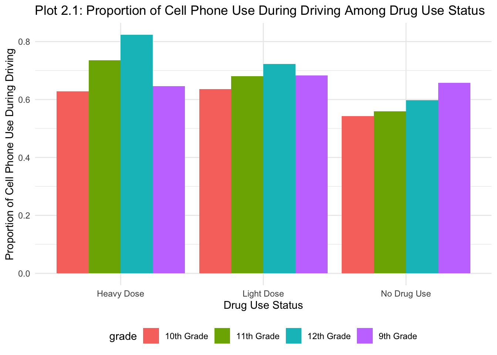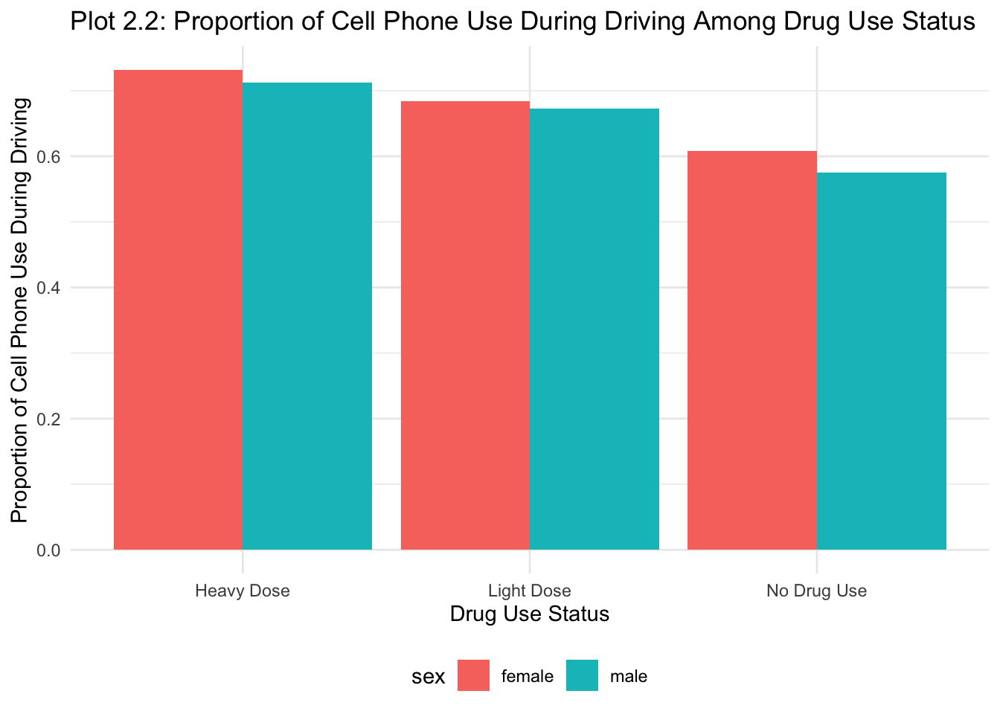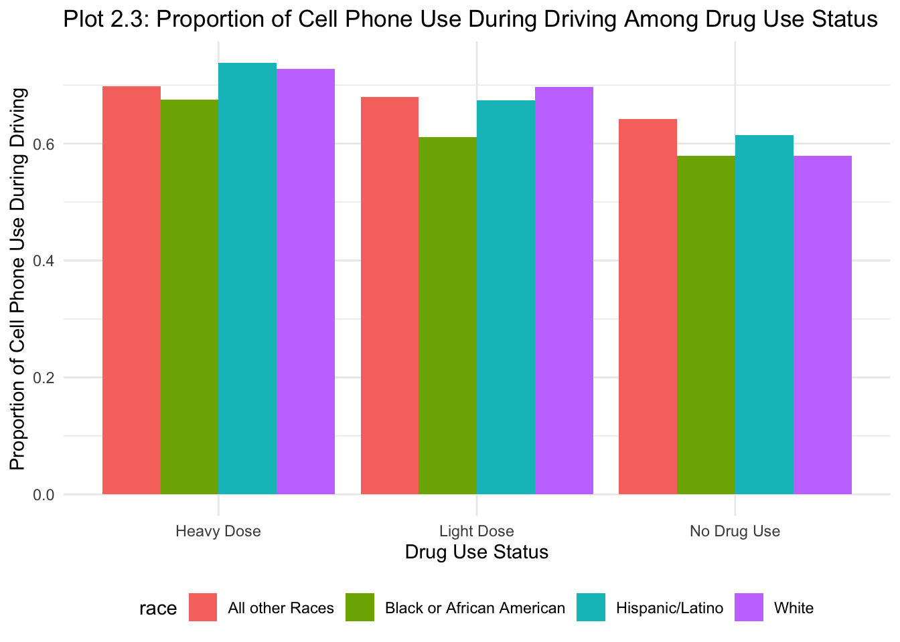
The overall proportion of cell phone use while driving rises while the level of drug use rises. However, the increment is small and invisible after stratifying by races. Female tends to have higher proportion of cell phone use while driving regardless of drug use status.
3. Carrying Weapon
| stratum | statistic | p.value | df | cramer_v_effect_size |
|---|---|---|---|---|
| crude | ||||
| Overall | 676.6931 | 0 | 2 | 0.2610880 |
| grade | ||||
| 10th Grade | 172.8207 | 0 | 2 | 0.2512356 |
| 11th Grade | 139.7170 | 0 | 2 | 0.2363566 |
| 12th Grade | 125.8154 | 0 | 2 | 0.2624922 |
| 9th Grade | 275.8729 | 0 | 2 | 0.3104700 |
| sex | ||||
| female | 221.2204 | 0 | 2 | 0.2054693 |
| male | 416.7429 | 0 | 2 | 0.2981856 |
| race | ||||
| All other Races | 151.6157 | 0 | 2 | 0.3648465 |
| Black or African American | 150.6375 | 0 | 2 | 0.3845794 |
| Hispanic/Latino | 190.5880 | 0 | 2 | 0.3221019 |
| White | 257.4158 | 0 | 2 | 0.2083045 |
From Table 4, we can see that all p-values are significantly small to conclude that there is association between drug use status and carrying weapon. The overall effect size is around 0.26 while the lowest effect size is greater than 0.2, so we are confident to say that it is an medium association. However, the large difference of effect size among gender and race implies the interaction effects of gender and race on the association. The association between drug use status and carrying weapon is stronger among male compared to female; the association between drug use status and carrying weapon is strongest among Black or African American and weakest among White.
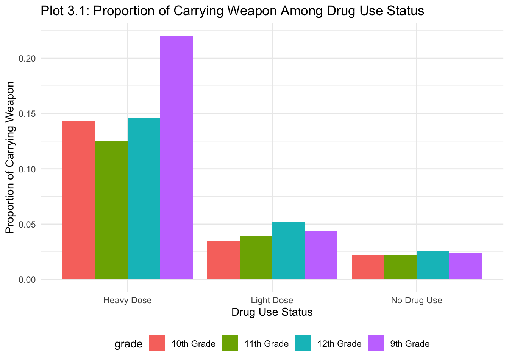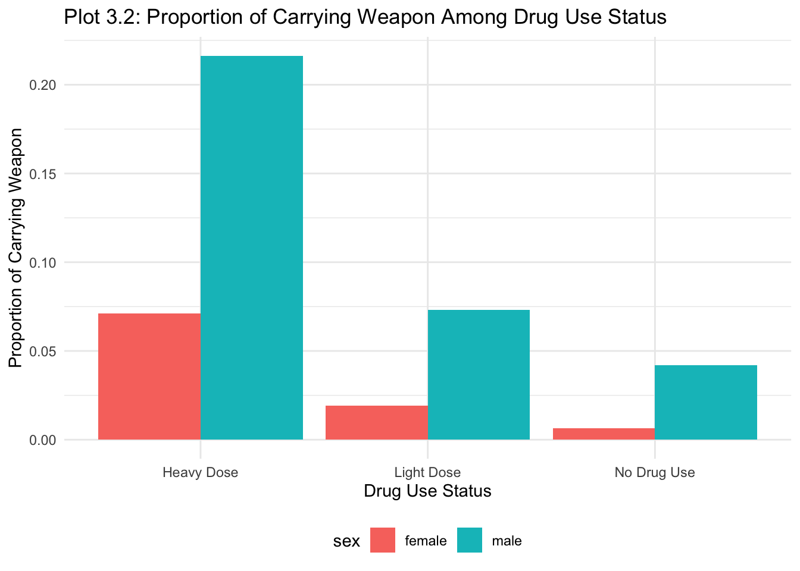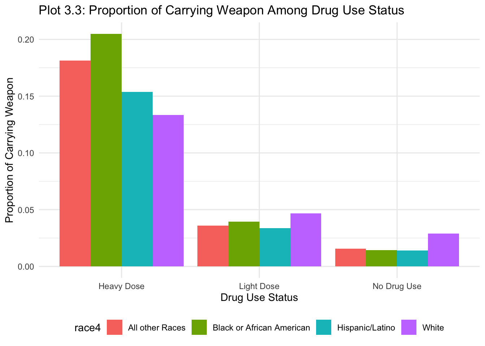
All plots demonstrate an rising trend of proportion of carrying weapon with the increase level of drug use frequency. The proportion of carrying weapon boosts from light dose drug use to heavy dose drug use. 9th Grade has highest proportion of carrying weapon regardless of drug use status while male has higher proportion of carrying weapon than female ar all drug use status. The proportion of Black and African American students carrying weapon suddenly escalates on heavy dose drug use.
4. Suicide Attempt
| stratum | statistic | p.value | df | cramer_v_effect_size |
|---|---|---|---|---|
| crude | ||||
| Overall | 1128.37931 | 0 | 2 | 0.3371464 |
| grade | ||||
| 10th Grade | 370.52483 | 0 | 2 | 0.3678679 |
| 11th Grade | 271.59791 | 0 | 2 | 0.3295387 |
| 12th Grade | 159.41991 | 0 | 2 | 0.2954751 |
| 9th Grade | 412.00584 | 0 | 2 | 0.3794171 |
| sex | ||||
| female | 716.88919 | 0 | 2 | 0.3698796 |
| male | 438.91473 | 0 | 2 | 0.3060149 |
| race | ||||
| All other Races | 192.74839 | 0 | 2 | 0.4113708 |
| Black or African American | 47.03447 | 0 | 2 | 0.2148956 |
| Hispanic/Latino | 189.10957 | 0 | 2 | 0.3208501 |
| White | 735.17942 | 0 | 2 | 0.3520285 |
From Table 5, we can see that all p-values are small enough, so we could reject the null hypothesis that there is association between drug use status and suicide attempt. The overall effect size is around 0.33 while the lowest effect size is greater than 0.21, so the association is moderately strong. The interaction effect of race in the association is detected by the difference of effect size among different races. The association is strongest for all other races while it is weakest for Black or African American.
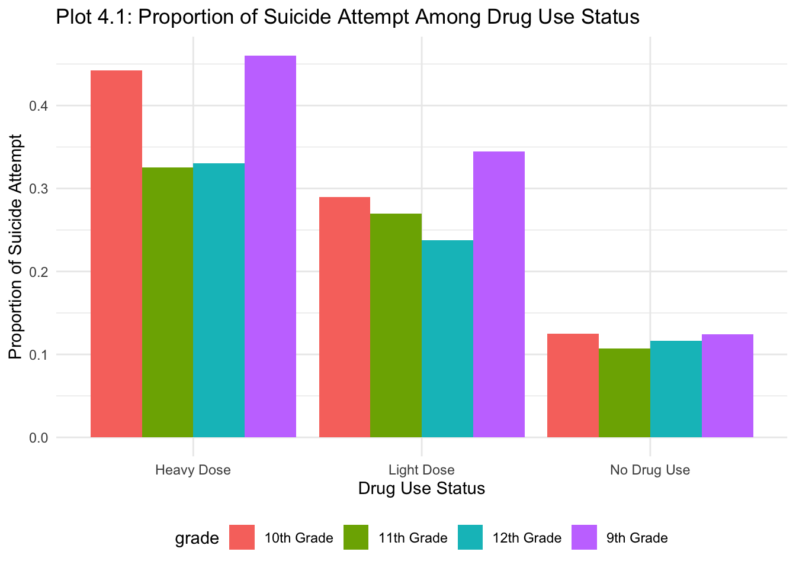 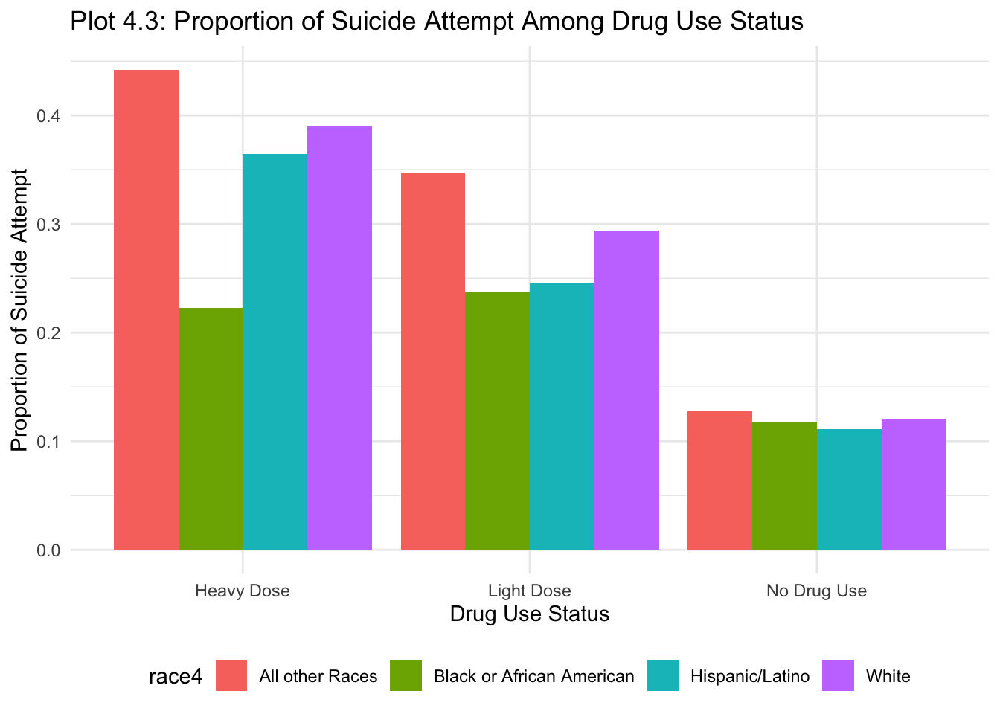
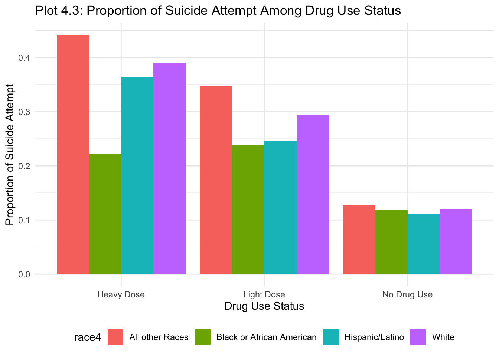
Based on these proportion plots, the proportion of suicide attempt increases while the level of drug use frequency goes up. This trend also shows up at each stratum in the stratified plot. The dose-response relationship supports our conclusion about the association between suicide attempt and drug use status.
5. Quit smoking
| stratum | statistic | p.value | df | cramer_v_effect_size |
|---|---|---|---|---|
| crude | ||||
| Overall | 16.0233514 | 0.0003316 | 2 | 0.0808217 |
| grade | ||||
| 10th Grade | 7.7000134 | 0.0212796 | 2 | 0.1090922 |
| 11th Grade | 1.9523859 | 0.3767427 | 2 | 0.0532514 |
| 12th Grade | 0.9685637 | 0.6161395 | 2 | 0.0394928 |
| 9th Grade | 17.1191810 | 0.0001917 | 2 | 0.1856872 |
| sex | ||||
| female | 5.0835165 | 0.0787279 | 2 | 0.0650595 |
| male | 9.5952996 | 0.0082491 | 2 | 0.0875441 |
| race | ||||
| All other Races | 1.9253531 | 0.3818694 | 2 | 0.0832959 |
| Black or African American | 18.0007244 | 0.0001234 | 2 | 0.3297965 |
| Hispanic/Latino | 15.9987629 | 0.0003357 | 2 | 0.2177240 |
| White | 15.1210110 | 0.0005206 | 2 | 0.0950840 |
For quit smoking, we should focus on students who smoke so the number of non-smokers won’t bias our results. After filtering out the nonsmokers, the resulted table is in Table 6. Some p-values are not significantly small enough to conclude the association. The overall effect size is around 0.08 and the difference of effect size among grades and among races are significantly large, so the confounding and interaction effects heavily impacted the analysis of association. We would conclude that there is no association between drug use status and quit smoking.
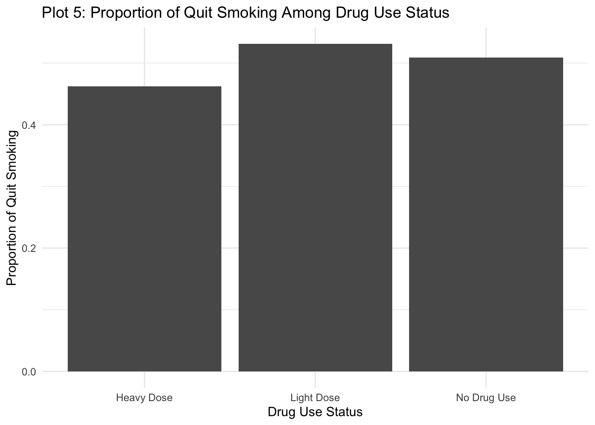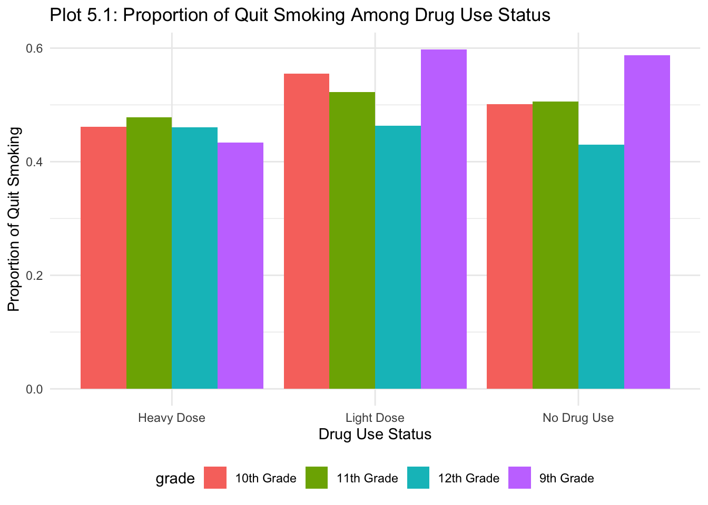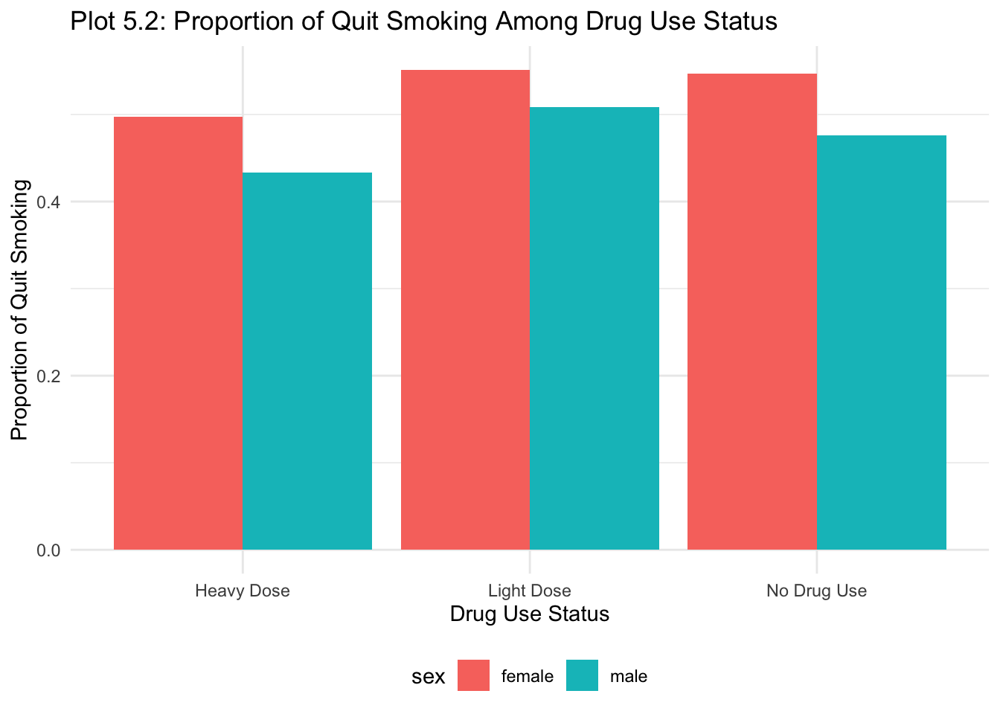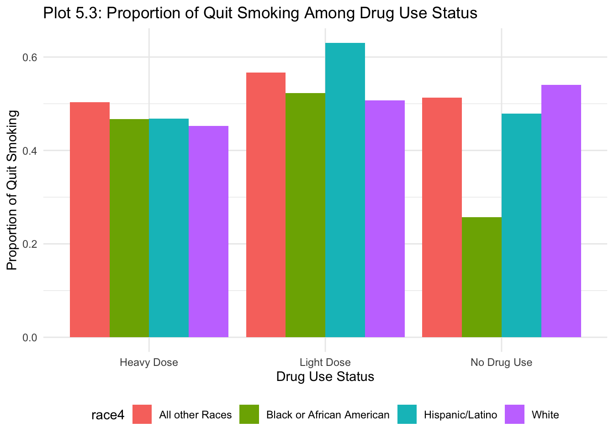
The proportion bar plots do not demonstrate any dose-response relationship since the proportion has no trend of increasing or decreasing across the drug use status. Moreover, the difference of proportion is small between each drug use status. Thus, these plots support the conclusion in the analysis table that there is no association between quit smoking and drug use status.
6. Physical Fight
| stratum | statistic | p.value | df | cramer_v_effect_size |
|---|---|---|---|---|
| crude | ||||
| Overall | 1494.64346 | 0 | 2 | 0.3880251 |
| grade | ||||
| 10th Grade | 477.08710 | 0 | 2 | 0.4174285 |
| 11th Grade | 398.62480 | 0 | 2 | 0.3992320 |
| 12th Grade | 271.52502 | 0 | 2 | 0.3856155 |
| 9th Grade | 576.12126 | 0 | 2 | 0.4486649 |
| sex | ||||
| female | 848.99278 | 0 | 2 | 0.4025190 |
| male | 693.55868 | 0 | 2 | 0.3846751 |
| race | ||||
| All other Races | 227.42897 | 0 | 2 | 0.4468492 |
| Black or African American | 98.51405 | 0 | 2 | 0.3110059 |
| Hispanic/Latino | 296.64639 | 0 | 2 | 0.4018509 |
| White | 884.81376 | 0 | 2 | 0.3861954 |
From Table 7, we can see that all p-value are significantly small and the effect size are around 0.4, it is the association between drug use status and physical fight is strong. The effect size over each stratum is very close to each other, so the interaction effect is negligible.
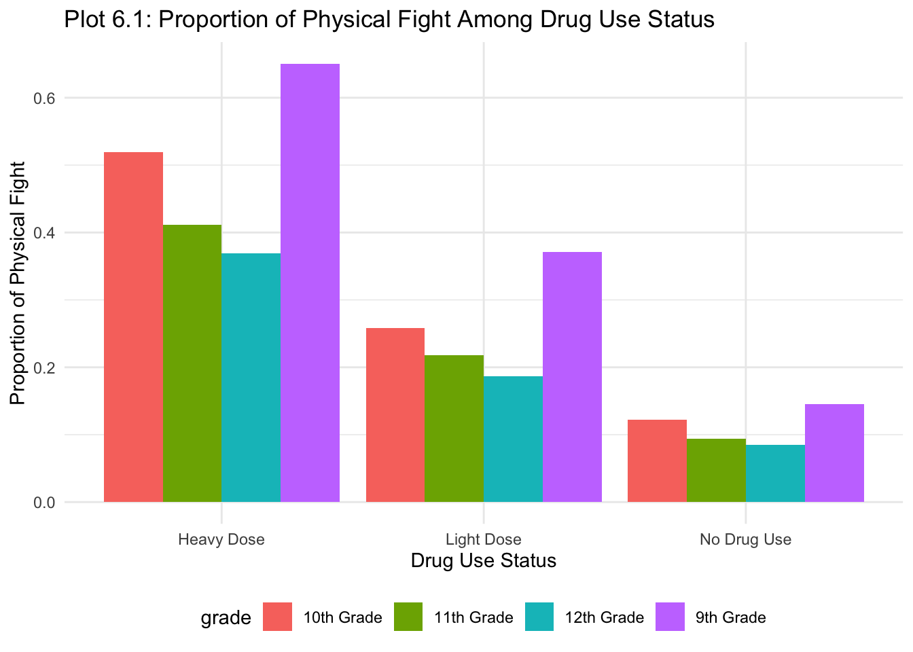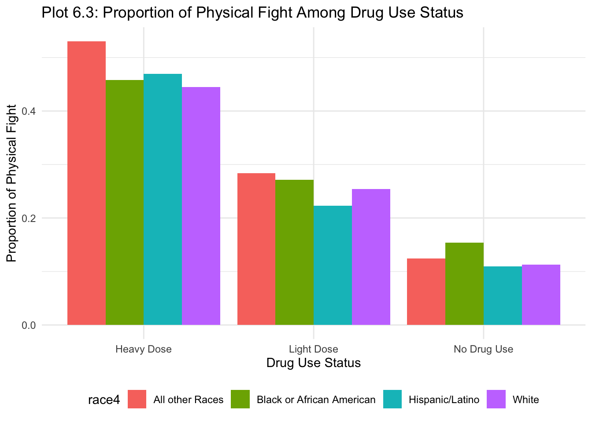
The plots illustrate a positive relationship between drug use status and proportion of physical fight, so the proportion of physical fight is higher when the drug use is heavier. This positive trend is stable in each stratum in the stratified plot. The plots are consistent with our conclusion based on the statistical analysis table and enhance the inference about the association between drug use status and physical fight.
7. Early-age Sexual Intercourse
| stratum | statistic | p.value | df | cramer_v_effect_size |
|---|---|---|---|---|
| crude | ||||
| Overall | 2215.3034 | 0 | 2 | 0.4723975 |
| grade | ||||
| 10th Grade | 689.4462 | 0 | 2 | 0.5018033 |
| 11th Grade | 541.0647 | 0 | 2 | 0.4651229 |
| 12th Grade | 307.7284 | 0 | 2 | 0.4105191 |
| 9th Grade | 925.9117 | 0 | 2 | 0.5687874 |
| sex | ||||
| female | 1189.1246 | 0 | 2 | 0.4763740 |
| male | 1026.5625 | 0 | 2 | 0.4679993 |
| race | ||||
| All other Races | 298.2025 | 0 | 2 | 0.5116745 |
| Black or African American | 114.6841 | 0 | 2 | 0.3355607 |
| Hispanic/Latino | 456.4091 | 0 | 2 | 0.4984511 |
| White | 1402.3034 | 0 | 2 | 0.4861856 |
From Table 8, all p-value are significantly small and the effect size are around 0.4, it shows that the association between drug use status and early age sex is strong. The effect size over each stratum is close to each other, so the interaction effect is negligible.
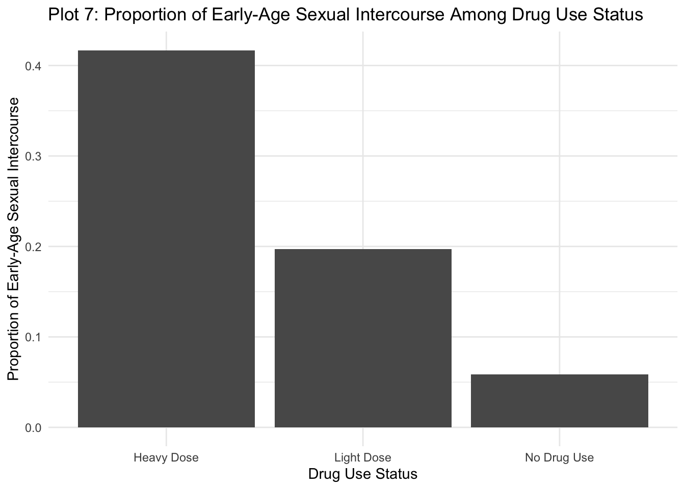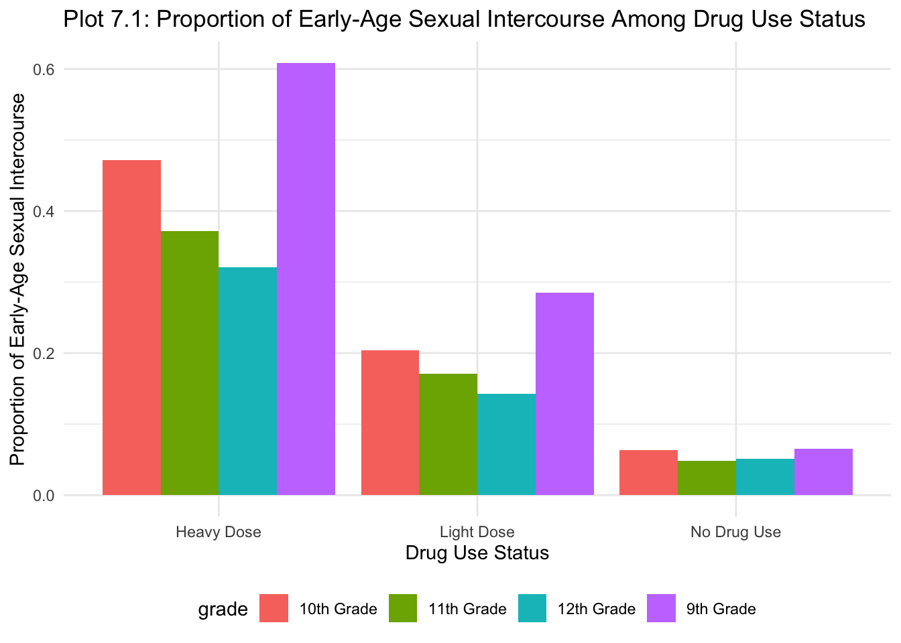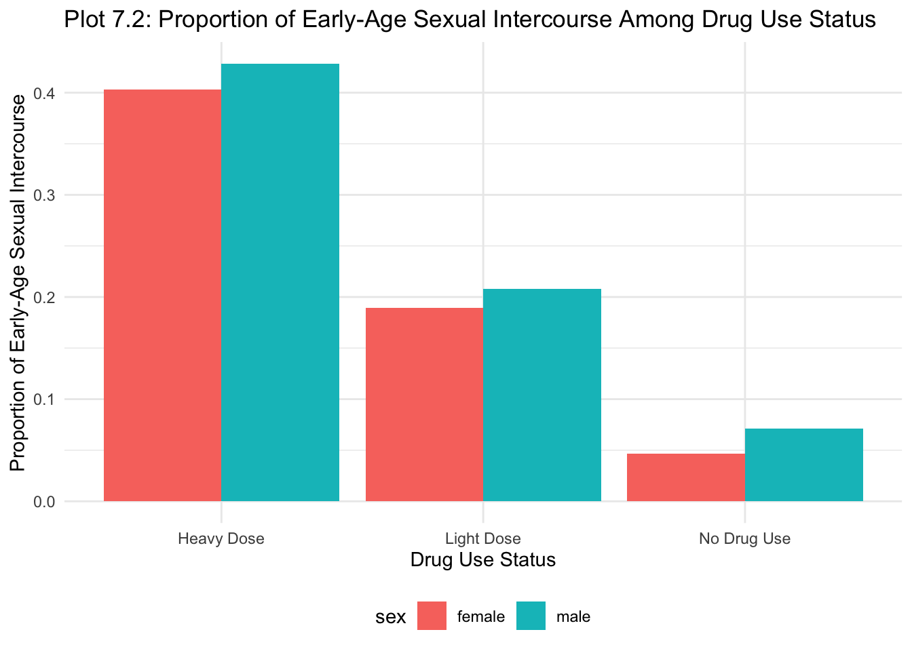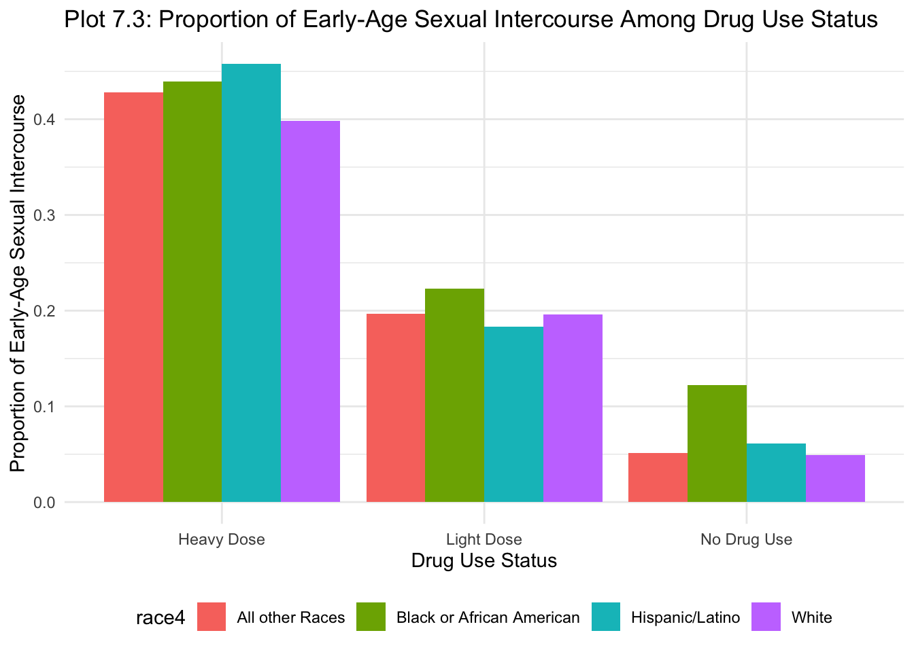 The plots illustrate a positive relationship between drug use status and proportion of early age sex, so the proportion of early age sex is higher when the drug use is heavier. 9th Grade has highest proportion of having early age sex regardless of drug use status while male has higher proportion of having early age sex than female ar all drug use status. Hispanic race has higher proportion of having early age sex when they used heavy dose compared to did not use drug and used light dose drug, which implies a high risky sexual behavior can be triggered when they use heavy dose drug.
8. Screening Use
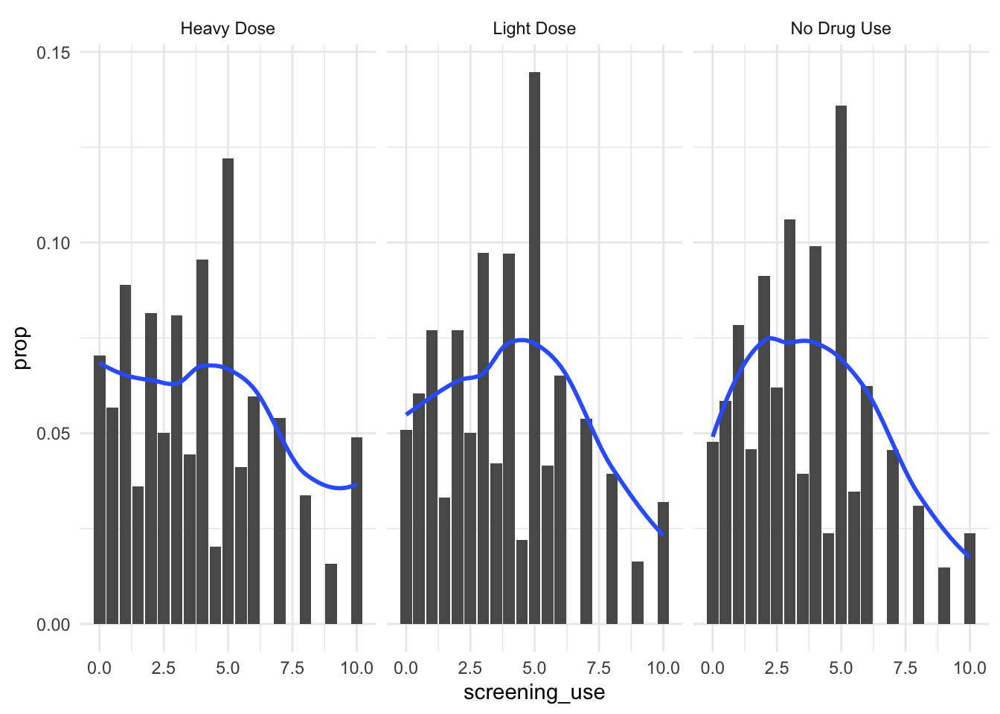
| stratum | statistic | p.value | df | cramer_v_effect_size |
|---|---|---|---|---|
| crude | ||||
| Overall | 30.524402 | 0.0000002 | 2 | 0.0554517 |
| grade | ||||
| 10th Grade | 10.164083 | 0.0062072 | 2 | 0.0609281 |
| 11th Grade | 16.490417 | 0.0002625 | 2 | 0.0812006 |
| 12th Grade | 2.739169 | 0.2542126 | 2 | 0.0387310 |
| 9th Grade | 25.638308 | 0.0000027 | 2 | 0.0946477 |
| sex | ||||
| female | 49.915034 | 0.0000000 | 2 | 0.0976001 |
| male | 2.420158 | 0.2981737 | 2 | 0.0227235 |
| race | ||||
| All other Races | 6.125398 | 0.0467613 | 2 | 0.0733340 |
| Black or African American | 4.444540 | 0.1083628 | 2 | 0.0660591 |
| Hispanic/Latino | 2.091141 | 0.3514913 | 2 | 0.0337394 |
| White | 15.533604 | 0.0004236 | 2 | 0.0511702 |
From Table 9, p-value is not significantly small and effect size is small, implying that there is not a strong association between screening use and drug use frequency.
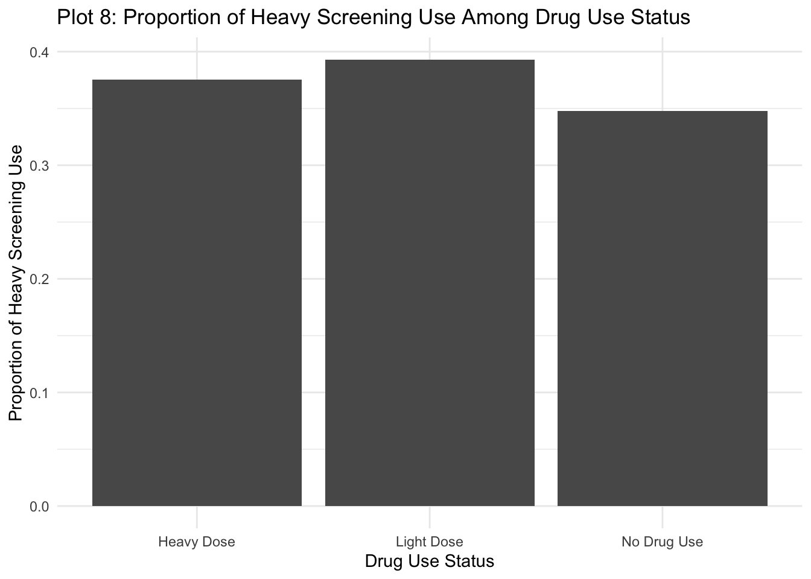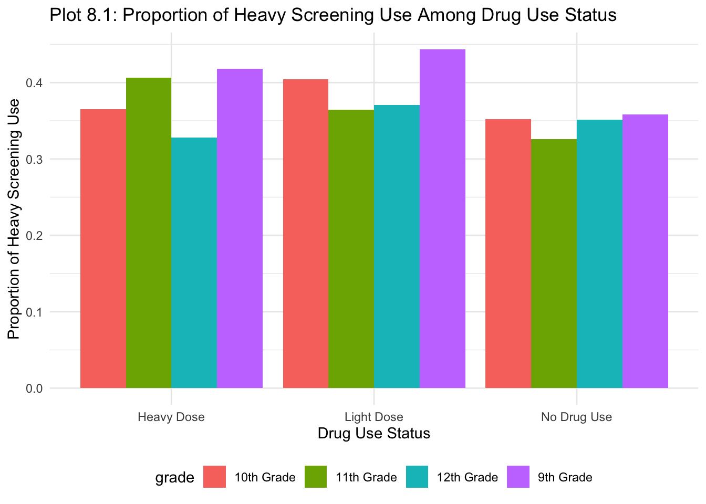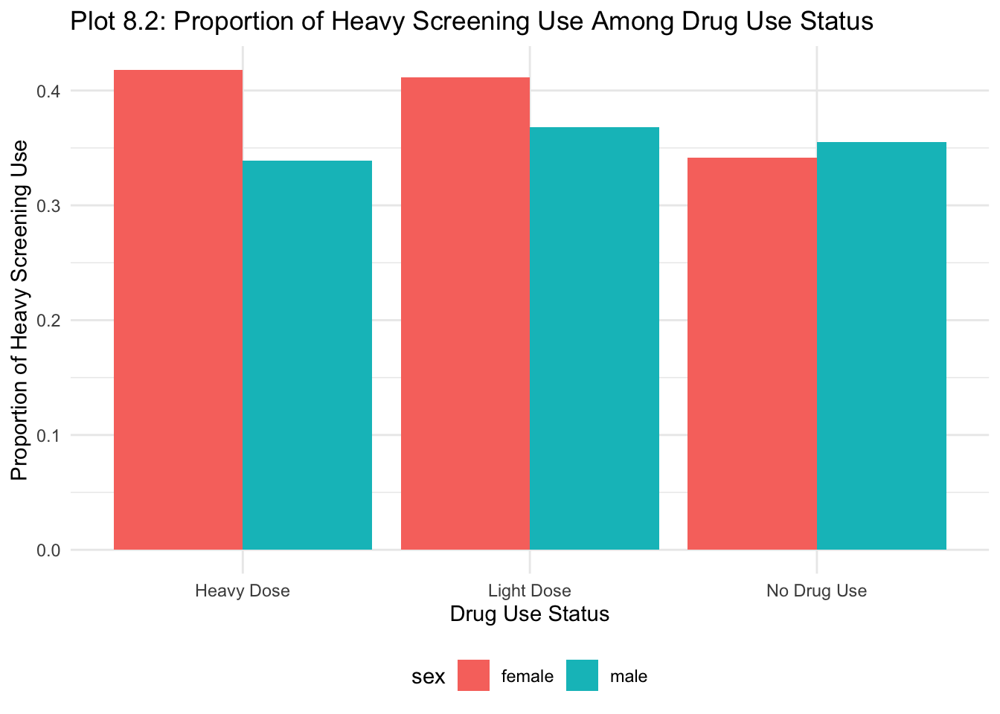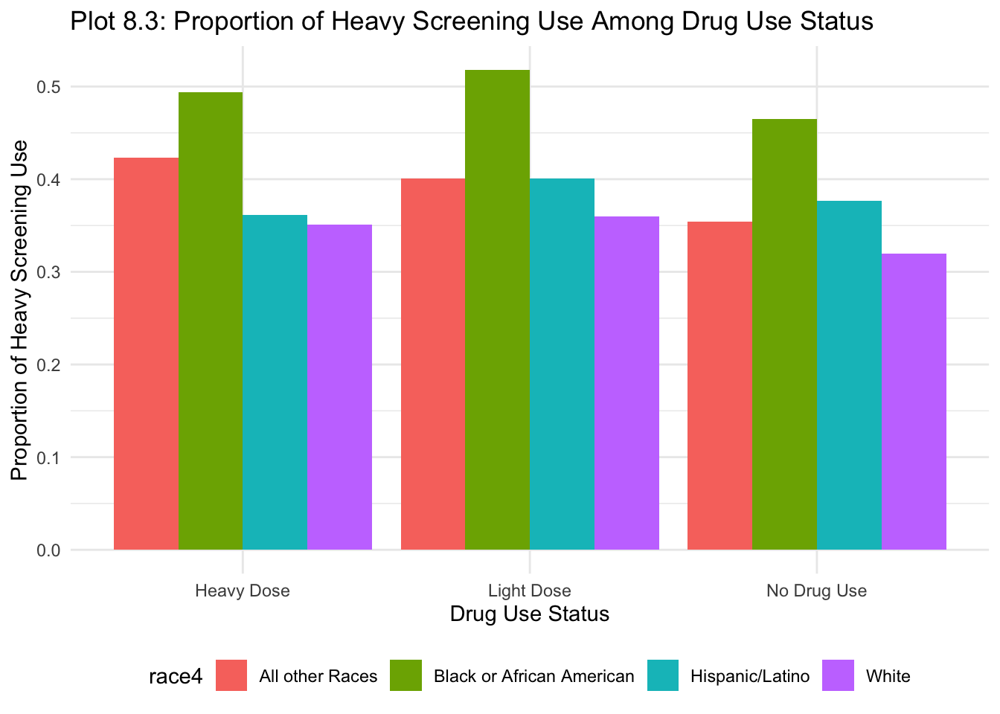 All plots show that there is not too much difference of screening use for different drug use frequency groups.
9. Sleeping Time
The density plot shows that heavy dose use subjects sleep less than no drug use subjects and light dose use subjects. Also, more portions of subjects sleep less than 5 hours for heavy dose use compared to no drug use and light dose use subjects.
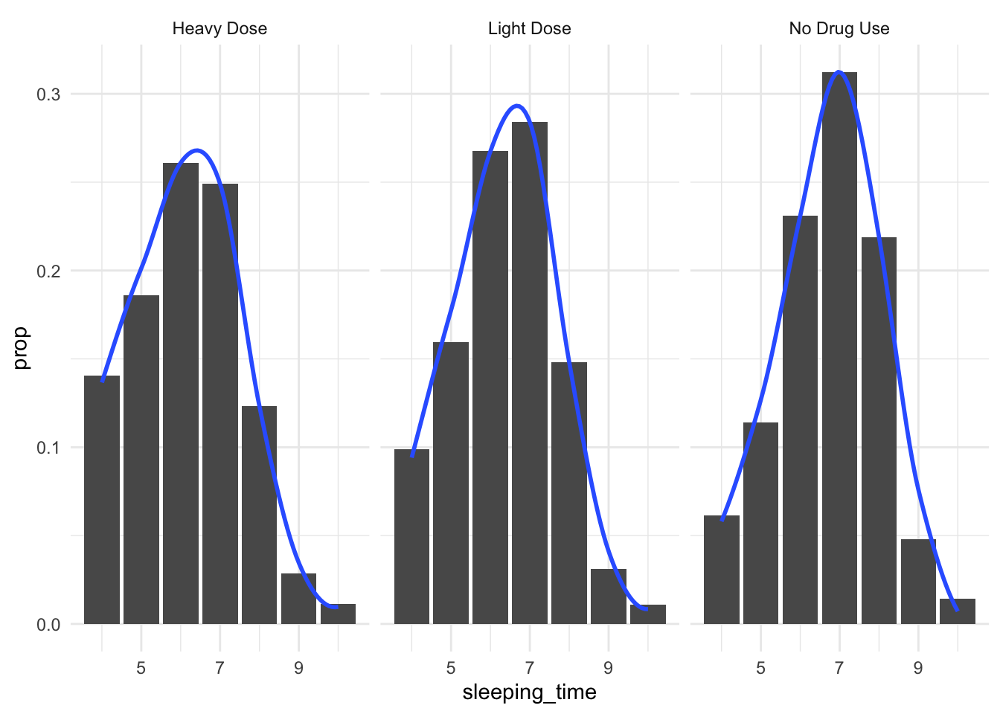
| stratum | statistic | p.value | df | cramer_v_effect_size |
|---|---|---|---|---|
| crude | ||||
| Overall | 224.523895 | 0.0000000 | 2 | 0.1503911 |
| grade | ||||
| 10th Grade | 38.283535 | 0.0000000 | 2 | 0.1182468 |
| 11th Grade | 26.206480 | 0.0000020 | 2 | 0.1023641 |
| 12th Grade | 33.113961 | 0.0000001 | 2 | 0.1346651 |
| 9th Grade | 67.607132 | 0.0000000 | 2 | 0.1536956 |
| sex | ||||
| female | 90.411458 | 0.0000000 | 2 | 0.1313548 |
| male | 137.899449 | 0.0000000 | 2 | 0.1715275 |
| race | ||||
| All other Races | 16.573826 | 0.0002518 | 2 | 0.1206284 |
| Black or African American | 8.871195 | 0.0118480 | 2 | 0.0933277 |
| Hispanic/Latino | 68.553378 | 0.0000000 | 2 | 0.1931790 |
| White | 136.895936 | 0.0000000 | 2 | 0.1519065 |
From Table 10, we can see that the overall p-value is significantly small. However, the effect size is around 0.1, suggesting the association is not that strong.
 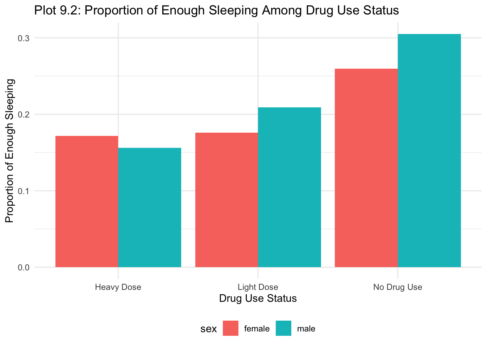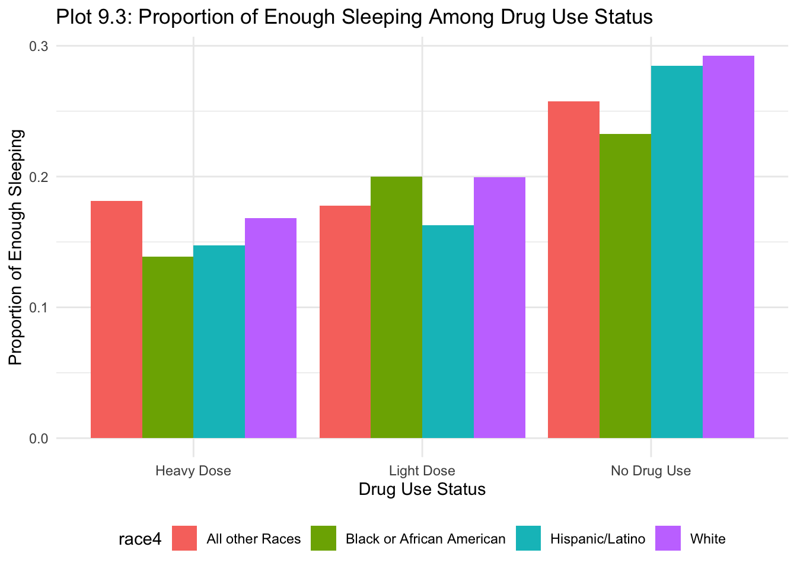 The “enough sleeping” plots shows that heavy dose subjects tend to have least proportions of having enough sleep in all grades and races. Male subjects tend to have more enough sleeping for no drug and use light dose, whereas they tend to have less enough sleeping time when use heavy dose of drug. It infers an association between sleeping time and drug use frequency.
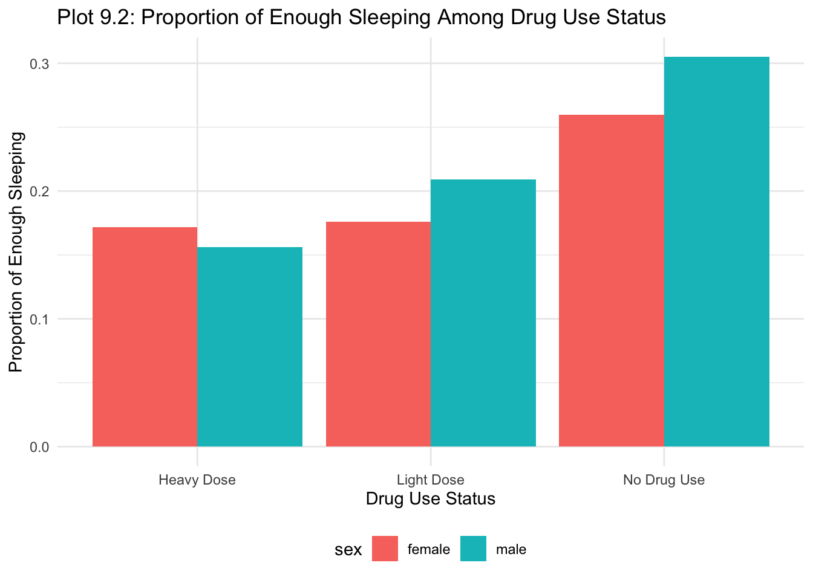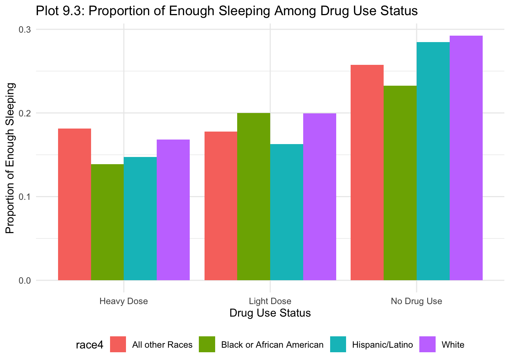 The “enough sleeping” plots shows that heavy dose subjects tend to have least proportions of having enough sleep in all grades and races. Male subjects tend to have more enough sleeping for no drug and use light dose, whereas they tend to have less enough sleeping time when use heavy dose of drug. It infers an association between sleeping time and drug use frequency.
10. Smoking Status
| stratum | statistic | p.value | df | cramer_v_effect_size |
|---|---|---|---|---|
| crude | ||||
| Overall | 3588.1901 | 0 | 4 | 0.8502443 |
| grade | ||||
| 10th Grade | 1001.8200 | 0 | 4 | 0.8554470 |
| 11th Grade | 906.6144 | 0 | 4 | 0.8514702 |
| 12th Grade | 543.8701 | 0 | 4 | 0.7718132 |
| 9th Grade | 1147.1991 | 0 | 4 | 0.8953639 |
| sex | ||||
| female | 1762.6172 | 0 | 4 | 0.8202162 |
| male | 1804.7565 | 0 | 4 | 0.8775600 |
| race | ||||
| All other Races | 546.7436 | 0 | 4 | 0.9798170 |
| Black or African American | 245.6196 | 0 | 4 | 0.6944900 |
| Hispanic/Latino | 511.0736 | 0 | 4 | 0.7459370 |
| White | 2396.6740 | 0 | 4 | 0.8988777 |
From table 11, we can see that all p-values are significantly small and the effect sizes are around 0.8, which means there is a strong association between drug use and smoking status. The association between drug use and smoking status is weaker among 12th Grade compared to other grades. Among race, All Other Races has the strongest association between drug use and smoking status, and Black or African American has the weakest association.
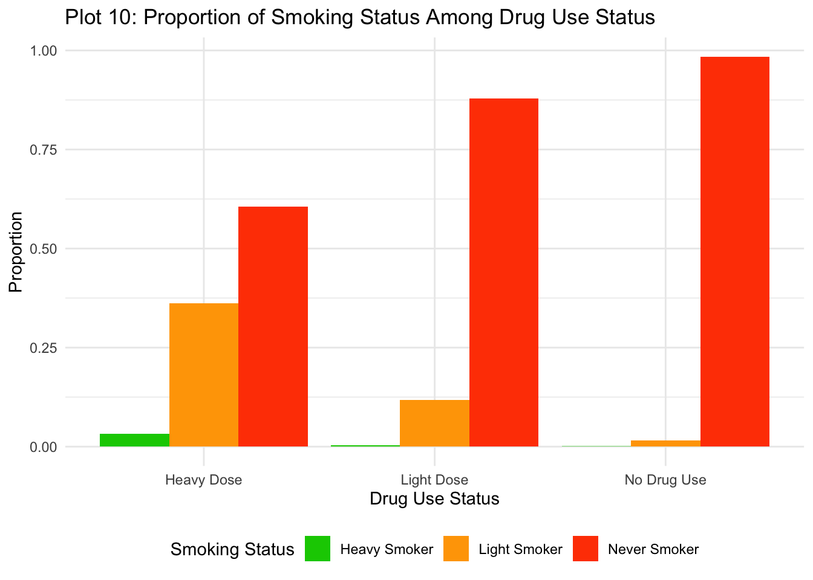
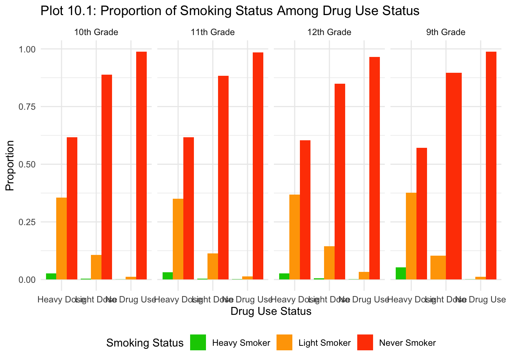
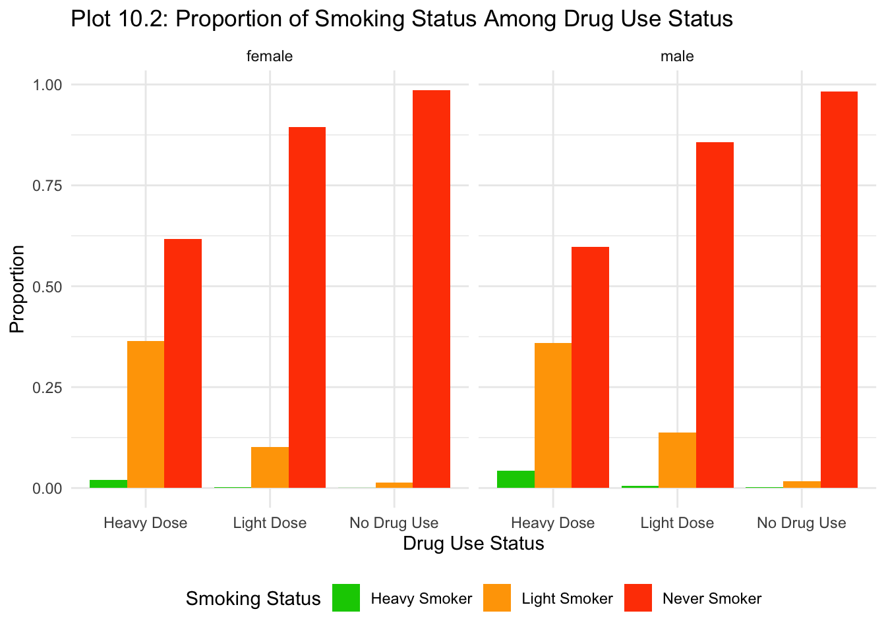
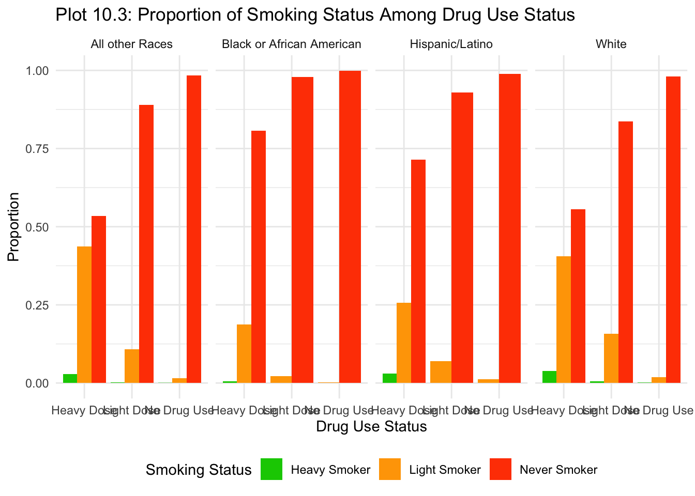
Based on the plot, it shows that heavy dose subjects tend to smoke more because there are more light dose and heavy dose smokers compared to no drug use and light dose drug use subjects. Higher portions of heavy smokers are 9th grade subjects and male gender. In addition, for heavy dose subjects, there are higher portions of heavy smokers in white race compared to Hispanic and Black race.
11. Binge Drinking
| stratum | statistic | p.value | df | cramer_v_effect_size |
|---|---|---|---|---|
| crude | ||||
| Overall | 4031.0318 | 0 | 4 | 0.9011853 |
| grade | ||||
| 10th Grade | 1015.7536 | 0 | 4 | 0.8613754 |
| 11th Grade | 914.2769 | 0 | 4 | 0.8550609 |
| 12th Grade | 715.6054 | 0 | 4 | 0.8853223 |
| 9th Grade | 1331.0011 | 0 | 4 | 0.9644271 |
| sex | ||||
| female | 1958.3677 | 0 | 4 | 0.8645627 |
| male | 2040.1988 | 0 | 4 | 0.9330475 |
| race | ||||
| All other Races | 541.1635 | 0 | 4 | 0.9748042 |
| Black or African American | 162.7432 | 0 | 4 | 0.5653090 |
| Hispanic/Latino | 771.7241 | 0 | 4 | 0.9166245 |
| White | 2685.8813 | 0 | 4 | 0.9515674 |
From table 12, all p-values are significantly small and the overall effect size is as high as 0.9, which indicate that there is a very strong association between drug use and binge drinking. The association between drug use and binge drinking is stronger among 9th Grade compared to other grades, and is stronger among male compared to female. Among race, Black or African American has a relatively weak association between drug use and binge drinking compared to other classification of races.
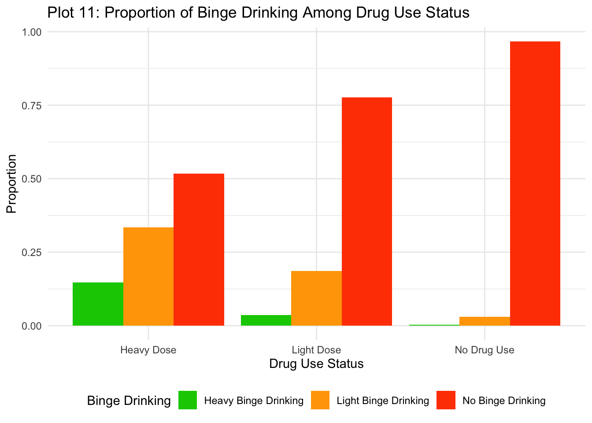
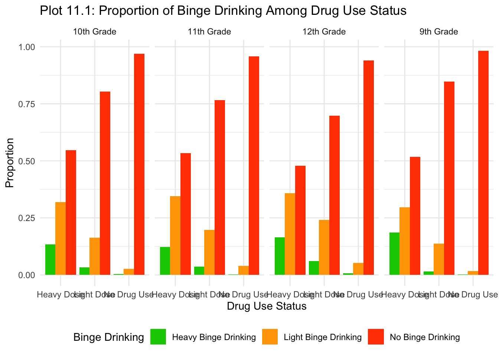
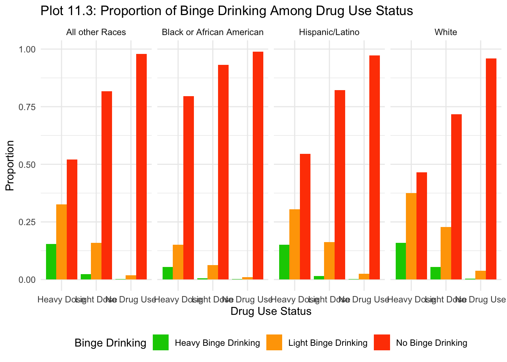
With the increase of drug use, the proportion of no binge drinking decreases, and the proportion of both light and heavy binge drinking increase. The trend of proportion of binge drinking is similar among grade and gender. Among race, no matter in what classification of drug use status, the proportion of no binge drinking among Black or African American is higher than other races, and the proportion of both light and heavy binge drinking is lower than other races.
12. Seat belt use
| stratum | statistic | p.value | df | cramer_v_effect_size |
|---|---|---|---|---|
| crude | ||||
| Overall | 758.34933 | 0 | 4 | 0.3908775 |
| grade | ||||
| 10th Grade | 192.13099 | 0 | 4 | 0.3746252 |
| 11th Grade | 171.55200 | 0 | 4 | 0.3703873 |
| 12th Grade | 156.53345 | 0 | 4 | 0.4140647 |
| 9th Grade | 301.94172 | 0 | 4 | 0.4593479 |
| sex | ||||
| female | 384.79732 | 0 | 4 | 0.3832352 |
| male | 367.71545 | 0 | 4 | 0.3961170 |
| race | ||||
| All other Races | 52.95343 | 0 | 4 | 0.3049300 |
| Black or African American | 57.11642 | 0 | 4 | 0.3348999 |
| Hispanic/Latino | 139.06322 | 0 | 4 | 0.3891048 |
| White | 547.86098 | 0 | 4 | 0.4297653 |
From table 13, all p-values are significantly small, and generally the effect size is around 0.4, which indicate that there is a strong association between drug use and seat belt use. The association between drug use and seat belt use is the strongest among 12th Grade compared to other grades, and is stronger among White compared to other races. As for gender, the association between drug use and seat belt use among male and female are very similar.
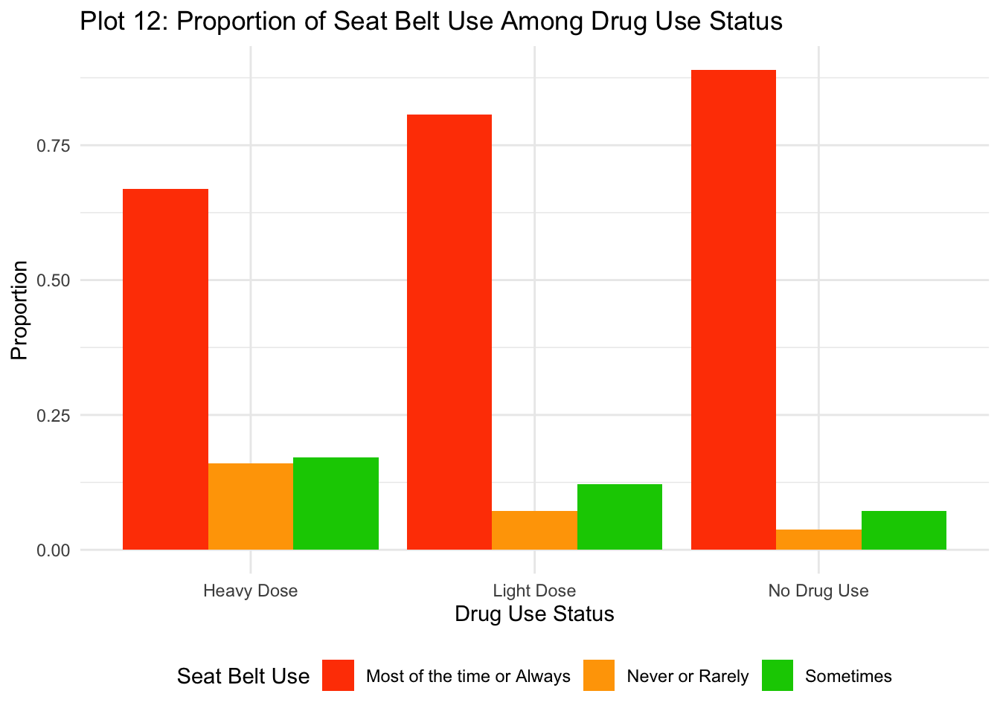
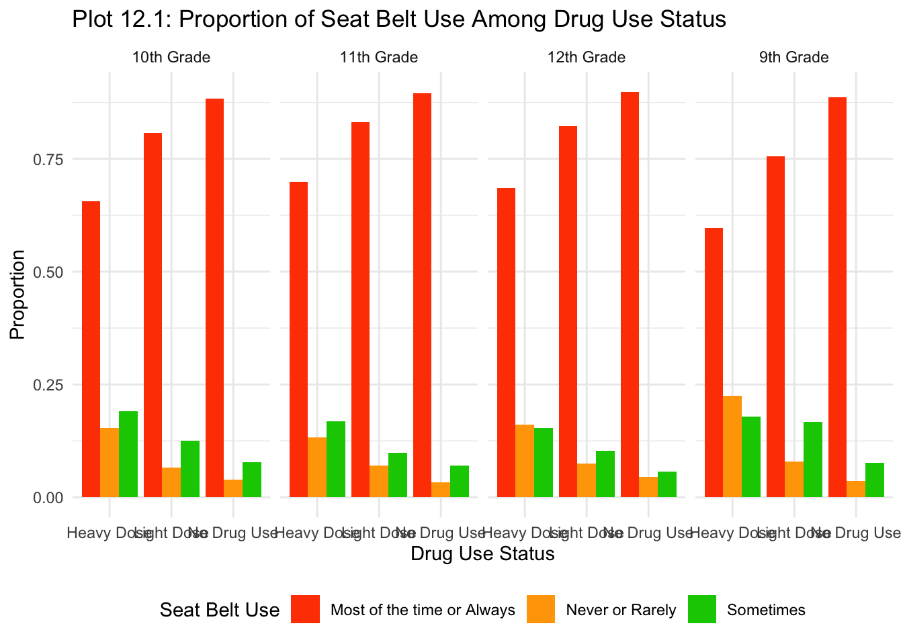
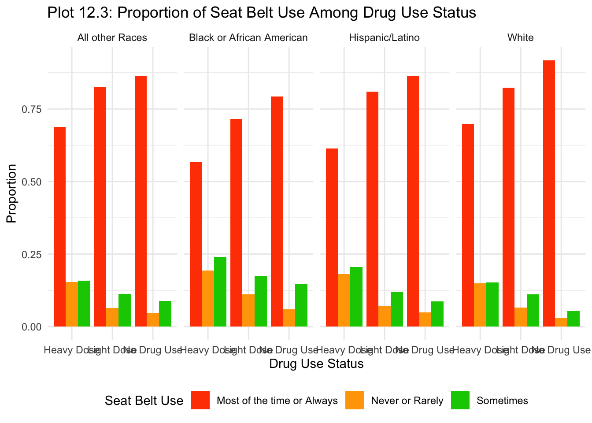
With the increase of drug use, the proportion of both never and sometimes use seat belt increase, and the proportion of always use seat belt decreases. The trend of proportion of seat belt use is similar among grade, gender, and sex, with a slightly higher proportion of never use seat belt than sometimes use seat belt in heavy drug dose status among male.
13. Grades in school
| stratum | statistic | p.value | df | cramer_v_effect_size |
|---|---|---|---|---|
| crude | ||||
| Overall | 1056.01928 | 0 | 6 | 0.5739685 |
| grade | ||||
| 10th Grade | 318.89934 | 0 | 6 | 0.5999429 |
| 11th Grade | 331.21759 | 0 | 6 | 0.6401861 |
| 12th Grade | 136.69654 | 0 | 6 | 0.4793813 |
| 9th Grade | 335.68761 | 0 | 6 | 0.6052035 |
| sex | ||||
| female | 628.98011 | 0 | 6 | 0.6079389 |
| male | 456.57736 | 0 | 6 | 0.5510378 |
| race | ||||
| All other Races | 182.43724 | 0 | 6 | 0.7076317 |
| Black or African American | 59.61303 | 0 | 6 | 0.4287210 |
| Hispanic/Latino | 124.03560 | 0 | 6 | 0.4594828 |
| White | 742.64017 | 0 | 6 | 0.6204197 |
From table 14, all p-values are significantly small, and the overall effect size is around 0.6, which means that there is a strong association between drug use and GPA. The association between drug use and GPA is the strongest among 11th Grade compared to other grades, and is the weakest among 10th Grade compared to other grades. Also, the association between drug use and GPA is stronger among female than male, and is stronger among students who are classified into all other races compared to students who are classified into other race groups.
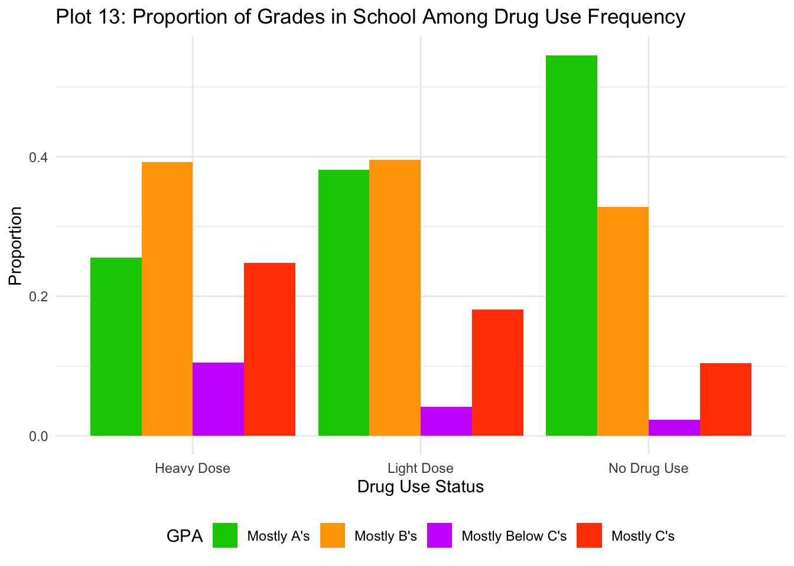
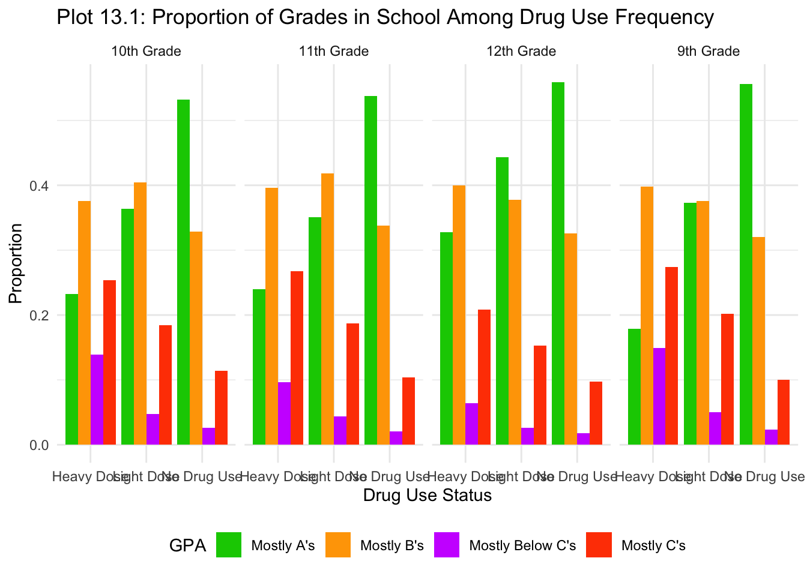
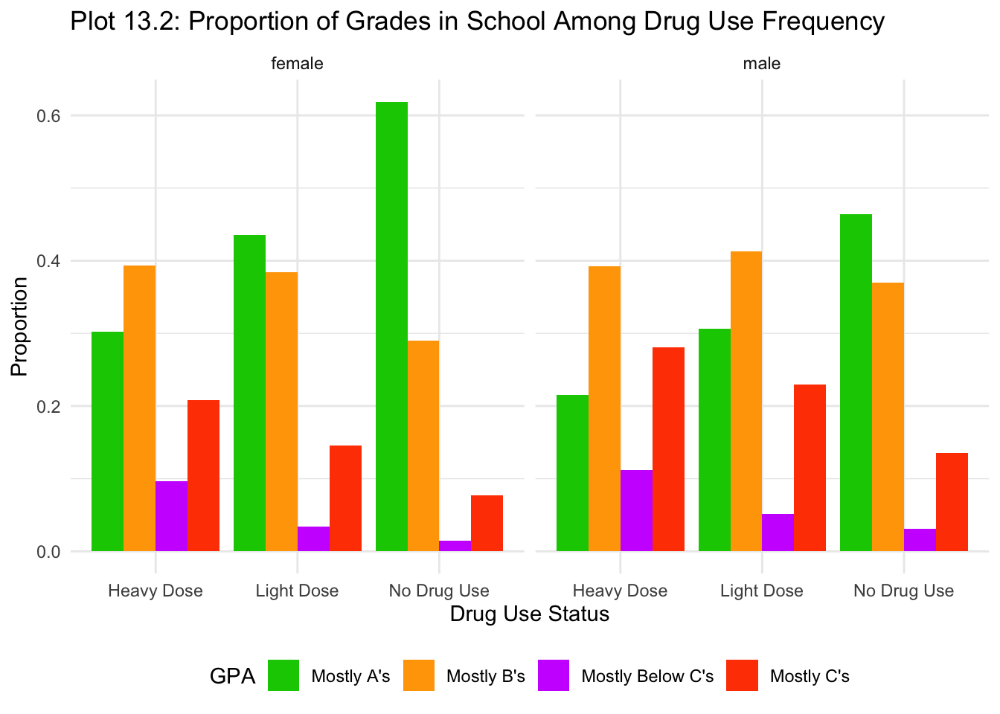
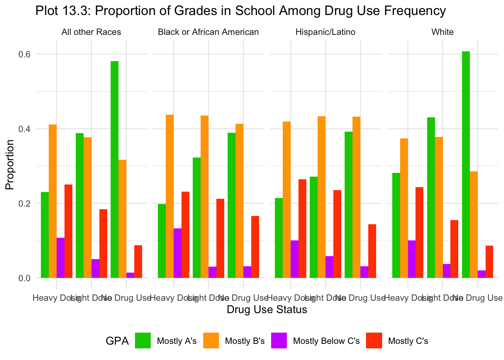
With the increase of drug use, the proportion of Mostly A’s decreases, the proportion of Mostly B’s has a little change, and the proportion of both mostly C’s and below C’s increase. The trend is particularly significant among 11th grade compared to other grades, and among all other races compared with White, Black or African American, and Hispanic/Latino.
Part 3
###2 Smoke initial age, Alcohol initial age, and BMI - More heavy dose subjects started to smoke when they were 9 to 10 and 11 to 12 years old compared to no drug use subjects and light dose drug use subjects. For those who used light dose drug, highest percentage of them started to smoke when they were 13 or 14 years old. For those who used heavy dose drug, most of them started to smoke when they were 15 or 16 years old. It shows that heavy dose subjects start to smoke earlier. - Similar things can be seen in drinking alcohol start age. More heavy dose subjects started to drink alcohol when they were 8 years old or younger and 11 or 12 years old compared to no drug use subjects and light dose drug use subjects. For no drug use and light dose drug use subjects, most of them started to drink alcohol when they were 15 or 16 years old. For heavy dose drug use subjects, most of them started to drink alcohol earlier at 13 or 14 years old. It shows that heavy dose subjects also start to drink alcohol earlier. - Density plots of BMI are all right-skewed, which means that the mean is greater than the median. Highest percentage of observations fall in 20-30 bmi. The box-plot shows that medians for three dose usgae groups are similar. In addition, one-way anova table implies that there is not a significant difference of BMI among three different drug use frequency groups.
Q11
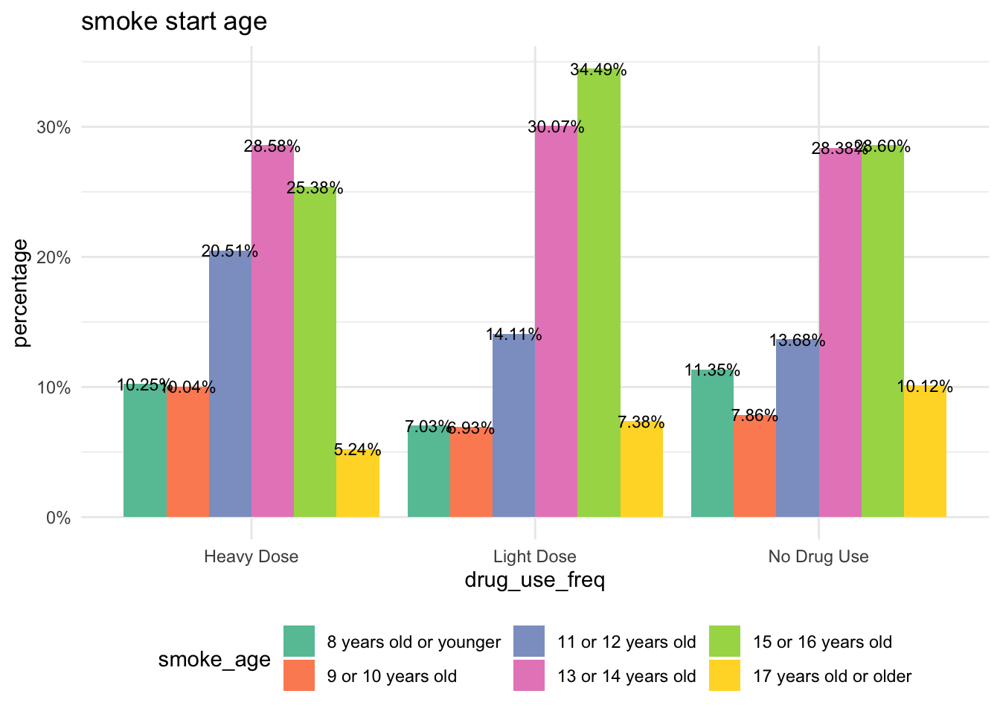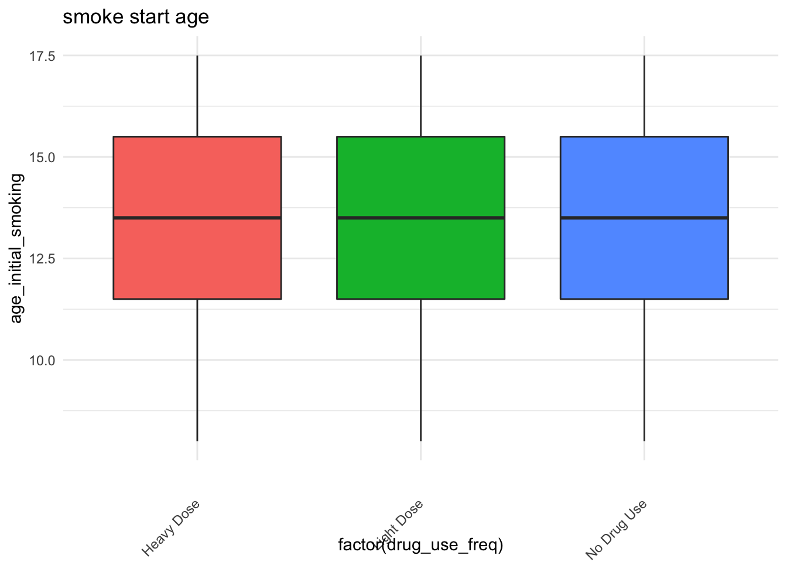
## Q2-alcohol
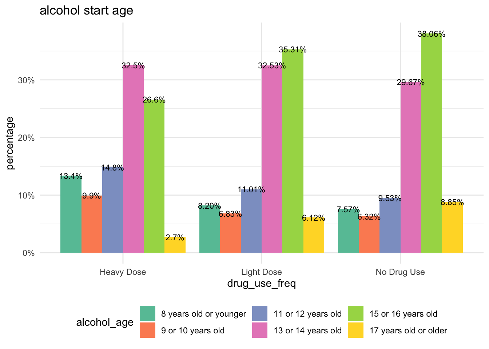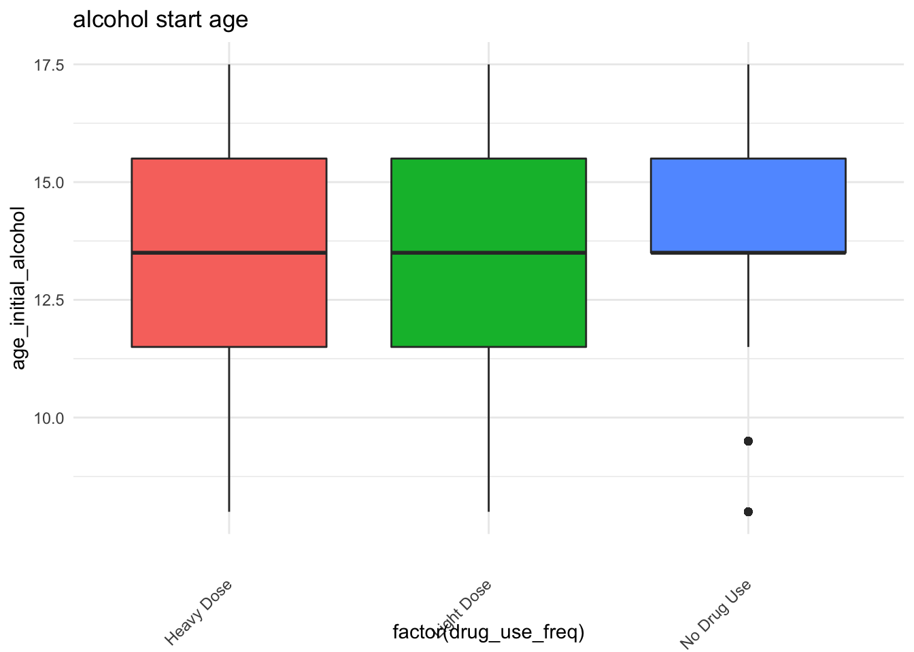
Q3-BMI
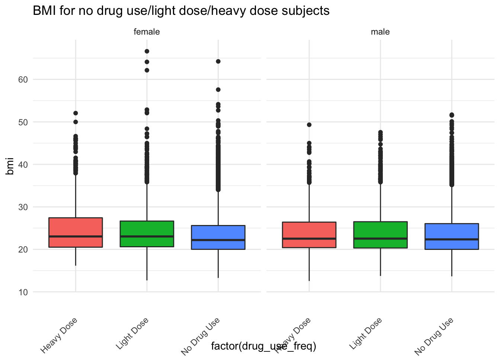
## Df Sum Sq Mean Sq F value Pr(>F)
## drug_use_freq 2 1841 920.4 32.45 8.54e-15 ***
## Residuals 18923 536712 28.4
## ---
## Signif. codes: 0 '***' 0.001 '**' 0.01 '*' 0.05 '.' 0.1 ' ' 1
## 928 observations deleted due to missingnessLogistic regression
Cross_Validation